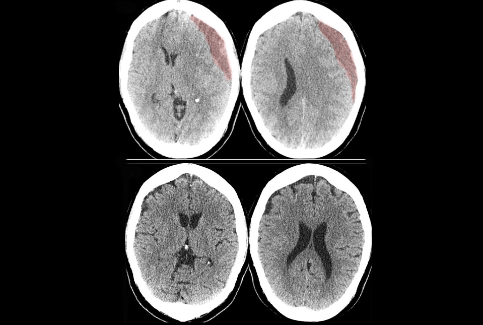

Why Brain Health Matters
Combat sports put incredible stress on the body — and the brain. Repeated head trauma can lead to long-term cognitive damage, emotional instability, and chronic neurological conditions like CTE. Understanding the risks is the first step toward prevention.
CT Scan of Subdural Hematoma
Normal Brain vs Advanced CTE